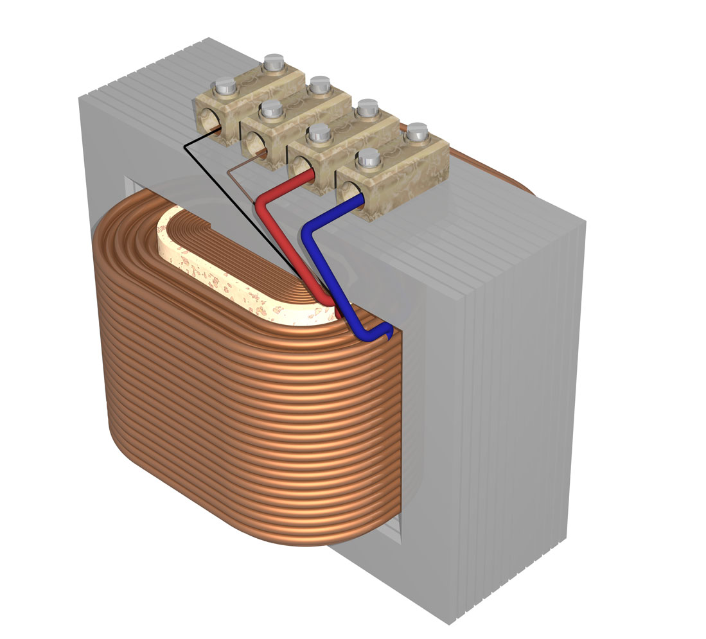

Audio Snob
The finer points of Buying a HiFi
Paul Scarrone
@PaulSCoder
paul.scarrone@gmail.com
Overview
Power
Amplification
Fidelity
Reciever
Components
Speakers
Not Discussing
Vintage <-> New
Analog <-> Digital
Brand <-> Brand
If you need help with a specific item just ask me
Power
DC Transformers
Toroidol
Small - Lightweight - Low hum - More complex
H-Core

Cheap - Easy to produce
Amplification
Vacuum Tubes (YAY!)
Solid State (Transistors)
Tubes!
Thermionic emission
Simple form is a Diode
Amplifiers use Triodes (
http://en.wikipedia.org/wiki/Lee_de_Forest
)
The days before transistors
Transistors
Cheap for low voltage under ~ 2000 Watts
Very good quality
Fidelity
accuracy; exactness;
Measurement
THD+N: Total Harmonic Distortion + Noise
Frequency response: Signal level variation vs output
SNR: Signal to Noise Ratio
Crosstalk: Noise bleed between signal paths
Dynamic range: Variant of THD for digital recievers
Frequency Response
The Reciever
Its all about design
Whats in there
Simple is better
Components
Phonograph (Record player)
MP3 Player
Digital Bridge
Phonograph
Requires Preamp
Operates at -30db
Is the reason we worry about SNR and THD
Speakers
The Story of Impedence
Resistance to current flow in ohms
Not Fixed
Based on signal frequency and amplification
Anything marketed as 6-8 ohm is fine for the home
The Cone and Driver
The Enclosure
Types - Click me
Alternatives
Bose
Sonos
iHome